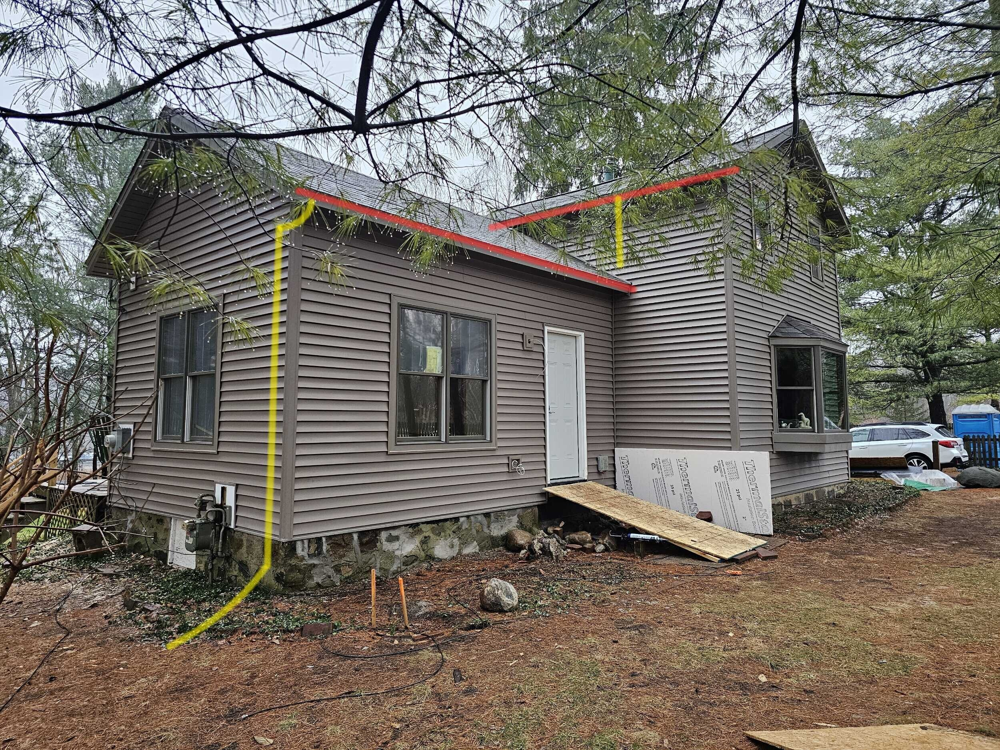
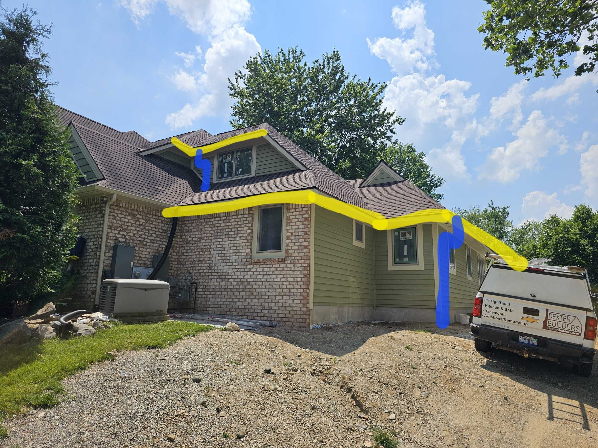
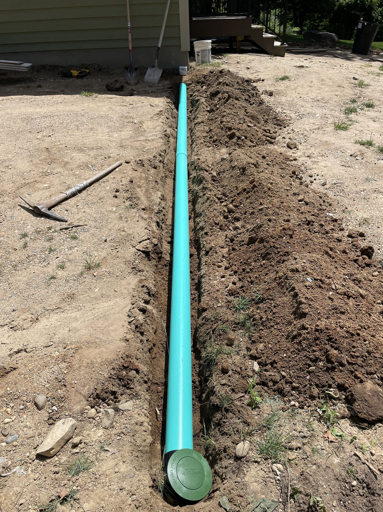

Gutters
K-style gutters are the most common profile in the US. The name comes from the cross-section shape based on the Roman ogee, meant to replicate crown moulding profiles. Subcontractors roll-form continuous troughs on site from coil stock, leaving the general contractor responsible for sizing, location decisions, and quality checks.
Quick Reference
- Choose 5" or 6" K-style trough based on roof area
- 2x3 downspout per 600 sq ft of roof area (minimum)
- 3x4 downspout per 1,200 sq ft of roof area (minimum)
- Downspout spacing: 20-80 ft; add or upsize for valleys
- Pitch: 1/4" drop per 10 ft of run
- Hidden hangers 24" O.C. (18" O.C. in snow load areas)
- Downspout straps every 6-8 ft
Prerequisites
- Fascia boards and drip edge installed and painted (if required) before gutter crew arrives
- Measure roof-plan areas to confirm gutter/downspout sizing
- Confirm discharge path: splash block, kick-out, or underground drain (verify daylight outlet)
- Decide with client on guard need and style
- Schedule gutter sub after roofing and any fascia paint touch-ups are complete
Gutter Types
K-Style (Ogee)
The standard residential gutter profile. Available in 5" and 6" widths. The decorative front face resembles crown moulding and the flat back mounts flush to fascia.
- 5" gutter with 2x3 downspout: up to 600 sq ft roof area per downspout
- 6" gutter with 3x4 downspout: up to 1,200 sq ft roof area per downspout
- Most common material: 0.027" or 0.032" aluminum
- Hidden hangers provide clean appearance
Tools: 6 ft level, hidden hangers, strip miters, end-caps, aluminum-rated sealant, self-piercing fasteners
Half-Round
Commonly specified on historic or high-design projects. More expensive than K-style but provides a traditional appearance.
- Available in galvanized steel, copper, or painted aluminum
- Use fascia-mount or roof-strap brackets at 24" O.C. max
- Same 1/4" per 10 ft pitch as K-style
- 3x4 downspouts recommended for adequate capacity
- Round downspouts typically used for aesthetic match
Tools: Wrap-around or bracket sets, round downspout components, appropriate sealant for material type
Copper Gutters
Copper gutters are a premium option that develops a natural patina over time. They are significantly more expensive than aluminum but can last 50+ years with proper installation. Copper requires soldered joints rather than sealant for watertight connections. Must be installed by specialists experienced with copper work.
Gutter Guards
Gutter guards reduce maintenance by preventing debris from entering the trough. Options include:
- Mesh/screen guards: Affordable, DIY-friendly, allow small debris through
- Micro-mesh: Fine screen blocks most debris including shingle grit
- Reverse curve (surface tension): Water follows curve into gutter, debris falls off
- Brush inserts: Bristles fill trough, debris sits on top
- Foam inserts: Porous foam allows water through, blocks debris
Even with guards installed, gutters require periodic inspection and cleaning. Guards reduce but do not eliminate maintenance.
Materials and Tools
- 6 ft or longer level for pitch check
- Hidden hangers (K-style) or wrap-around/bracket sets (half-round)
- Strip miters, end-caps, sealant rated for aluminum
- Stainless or self-piercing fasteners
- Splash guards for inside corners
- 10 ft splash blocks or elbows for discharge
- Optional: guard panels and matching hardware
Process
- Layout and Size
- Calculate roof areas draining to each gutter run
- Plan one 2x3 downspout per 600 sq ft or one 3x4 per 1,200 sq ft
- Add extra capacity at valleys where water concentrates
- Mark Downspout Locations
- Mark elevation drawings or photos with trough and downspout positions
- Coordinate with grade, walks, and aesthetics
- Space 20-80 ft apart; add extra where runs or valleys concentrate water
- Color Selection
- Choose color to coordinate with fascia, corner trim, or another detail
- Confirm with client before ordering
- Install Trough
- Set high end first
- Pitch 1/4" drop per 10 ft toward downspout
- Install hangers 24" O.C. (18" O.C. in heavy snow areas)
- Fasten hangers through fascia into rafter tails where possible
- Install Downspouts
- Strap every 6-8 ft
- Kick out away from foundation
- Or connect to underground drains with verified daylight outlet
- Add Guards (Optional)
- Install per manufacturer instructions
- Ensure guards do not void gutter warranty
Underground Drainage
Underground drainage systems connect downspouts to buried pipe that carries water away from the foundation. Key considerations:
- Use minimum 4" Schedule 40 PVC or corrugated drain pipe
- Maintain 1% minimum slope (1/8" per foot) toward outlet
- Daylight outlet must discharge to grade away from structure
- Include cleanout access points if possible
- Pop-up emitters can be used where surface discharge is acceptable
- Do not connect to footing drains or sanitary sewer
Best Practices
- Size mismatch: Installers prefer single sizes to avoid multiple mobilizations; confirm sizing requirements upfront and expect to pay more for mixed sizes
- Overflow at inside corners: Install splash guard or add a downspout near the valley
- Sagging trough: Increase hanger frequency to 18" O.C. under heavy snow load
- Ice-dam pull-off: Fasten hangers through fascia into rafter tails
- Debris clogging: Specify appropriate guard or schedule regular cleaning
- Splash blocks: Position to direct water at least 4 ft from foundation
- Verify underground drain outlets are clear before connecting downspouts
Inspections
No separate gutter inspection in most jurisdictions. In Michigan, the GC must meet 2015 MRC R903.4 requirement for "controlled roof drainage." Verify local requirements for underground drainage connections.
Client Communication
- Obtain approval on gutter size (5" vs 6"), downspout placement, color, and guard option before ordering
- Explain routine cleaning: twice yearly minimum if unguarded; debris sweep on guard tops each fall
- Advise that even guarded gutters need periodic inspection and cleaning
- Discuss underground drainage options if applicable
Photo Examples



Resources
Last revised: 01/30/2026